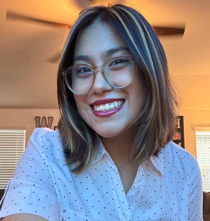

Welcome to my personal website! Here, you will find information about me and work about my progress as an artist so far!
About Me

My name is Sophia Diaz, I am currently an artist attending San Jacinto College getting my Digital Media Design and Production associate's degree. I have been attending San Jacinto College since 2022, I initially started attending college while I attended high school as I was a junior during this time. After I graduated, I wanted to make sure I had all my basic classes out of the way before I started to work on my art classes. My goal was achievable and now I am 4 years into San Jacinto College with two semesters left.
I chose this pathway because I have been an artist my whole life and I wanted to move on to a career to secure my desires as an artist. Though as an artist you will have art blocks and struggles to keep your work going. Unfortunately, I ran into an artist block for a while after 2021. It was a struggle for me to draw because I was putting my education first and felt drained and I didn’t touch a sketch book in a while. But when I graduated highschool and moved on to attending college as a full-time student, I started to gain my artistic talents again after I finished my basics in college, I started to learn how to play with adobe Photoshop, Illustrator, InDesign, Lightroom, and Premiere.
Now, as I progressed in my courses, I feel like I was truly an artist in my drawing and design class. I was able to pick a subject and interrupt art in my own style and explore what I could do better for my career in the future. What I feel in love with again is drawing and I used to do it so much when I was younger as I was so passionate about it and I was able to have passion for my art again this year. I found my lost drawing skills and gained it back, but I still do not know what my career will be, but I hope to figure it out before I leave San Jacinto College.
Here are some of the artworks I have done this semester.
My Portfolio
I made this art piece from my drawing class of spring semester 2026 at San Jacinto college. The assignment was to pick a subject and stylize it other than having just straight lines. I showed it through my mediums as I used alcohol markers, ink pens, and a paint marker to show highlights. This piece was based on a song video from a song artist named Melanie Martinez as she recorded it for her song "Possession." In her music video, the angle she is in the video shows her singing against glass, and I tried to replicate her through my style and chose colors that worked in my artwork.

I made this one in my drawing class; the assignment was to take a realistic picture representing the body in a position. It may not let to be realistic as my professor said try to make the body portions realistic and I showed the body proportions through my nephew. On this day, my family and I were at the hospital at five in the morning getting ready to wait for my niece's surgery. My parents were babysitting my nephew, and he was walking with my family as we had our hospital snacks with us while we were heading inside the hospital. He decided he wanted to carry all our snack bags and didn't want help at all! So, I captured him from a photo I took of him on March 13th of this year and drew him walking up the stairs.

This was an art assignment from my design class of this spring semester of 2026. I made this around March as the assignment was to make a mind map of inspirations, goals, or a list and map it on Bristol paper. The mediums I used for this one were alcohol markers, Prismacolor pencils, and acrylic paint markers. My mind map was a map of games I enjoy playing, and I have grabbed some inspirations from and drew some things that represented the games in the artwork.
This art piece I have here was my final drawing project from my drawing class. This piece took time to understand where my subjects go and what they are doing to look entertaining as circus performers. The mediums I used for this one were alcohol markers, ink pens, and white pens to make this piece.

This artwork I made was for my design project back in Feburary of this year. My mediums were ink pens and a black alcohol marker as my surface is bristol paper. This assignment to make patterns using a ruler or a compass while making a pattern using white and black. What I did with this project I use circle objects to trace my smaller circles and use a compass to make a bunch of circles. then I colored the circles black not all of them but I wanted to show movement on the circles.
Here is my artwork from my design class as it was my final project. The assignent was to replicate and modify an artist's artowrk through cardboard and paint. My piece was based on an artist named Paul klee as his art was very abstract as I chose an artpice called "Sailing ships". He had many colors to show a boat and had a bunch of squares in mulitple colors. I modify my artpiece to show the boat more and made a sky through square like shapes.